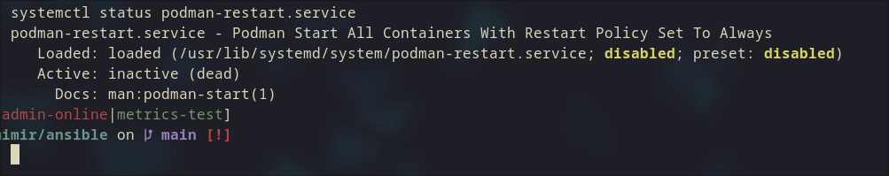

Linux 容器與虛擬化相關技術筆記
一、Linux 使用 Namespace 隔離與 cgroups 限制做資源管理
Namespace（命名空間）
- 提供資源的「視角隔離」，讓每個容器或程序有獨立的資源觀察範圍，如獨立的進程號（PID）、網路介面（NET）、掛載點（MNT）等，互相隔離看不到對方。
cgroups（控制群組）
- 用於限制和管理系統資源（CPU、記憶體、磁碟 I/O 等）使用量，確保容器或程序不會占用超過配置的資源，避免單一容器資源暴走影響整體系統。
二、VM（虛擬機）與容器差異
| 項目 | VM (虛擬機) | 容器 |
|---|---|---|
| 核心概念 | 模擬完整硬體環境，包含 CPU、記憶體等 | 共用宿主機 OS 核心，只隔離使用者空間與資源 |
| 系統組成 | 完整客戶作業系統（含 Kernel） | 只有使用者空間，Kernel 與宿主共用 |
| 安全性 | 高，因獨立 Kernel | 較低，Kernel 漏洞可能導致容器逃逸 |
| 資源消耗 | 大 | 輕量，快速啟動 |
| root 權限影響 | 容器 內 root 影響限於 VM | 容器內 root 權限可能直接危害宿主機安全 |
三、Docker 與 Podman 差異
| 項目 | Docker | Podman |
|---|---|---|
| 架構 | 有常駐守護進程（dockerd） | 無守護進程，daemonless |
| 容器管理 | 透過 dockerd 管理容器 | 每個容器獨立運行 |
| 預設權限 | 預設以 root 身份執行 | 支援 rootless 模式 |
| 重啟機制 | 支援 --restart 自動重啟 | 有預設守護進程可以開啟podman-restart.service ，也可以另外搭配 systemd restart |
| 安全性 | root 權限較高 | rootless 減少攻擊面，較安全 |
四、Docker 與 Podman 容器重啟差異
- Docker：守護進程 dockerd 支援
--restart參數，daemon 重啟或宿主機重啟會自動重啟容器。 - Podman：可以開啟podman-restart.service 。或是可用
podman generate systemd生成 systemd 服務單元，交由 systemd 管理。 
五、Kubernetes（K8s）中 Root 權限與 User Namespace 隔離
- 預設容器以 root 身份運行，風險較高。
- K8s 1.33 起，預設啟用 User Namespace 隔離（
hostUsers: false），將容器 root UID 映射成宿主機非 root 用戶，降低風險。 - 需 Linux Kernel ≥6.3，容器 runtime 與檔案系統支援。
Reference:
Securing Kubernetes 1.33 Pods: The Impact of User Namespace Isolation
總結
| 主題 | 核心重點 |
|---|---|
| Namespace + cgroups | Namespace 隔離資源視角，cgroups 限制資源量 |
| VM vs 容器 | VM 獨立 kernel 高安全但重資源，容器輕量但風險高 |
| Docker vs Podman | Docker 有守護進程，Podman 無守護進程且支援 rootless |
| 容器重啟 | Docker 支援自動重啟，Podman 要開啟podman-restart.service或systemd 管理 |
| K8s rootless | 1.33 版起預設 User Namespace 隔離降低 root 風險 |
| Podman 與 systemd / Quadlet | systemd 管理生命週期，Quadlet 用 YAML 簡化配置 |